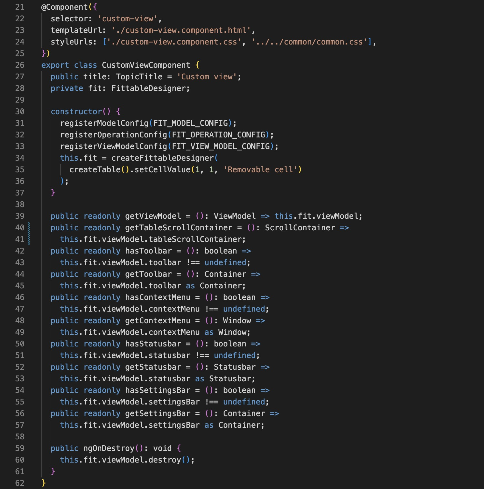
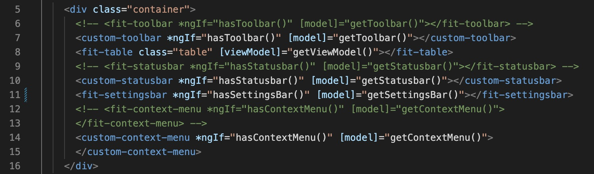
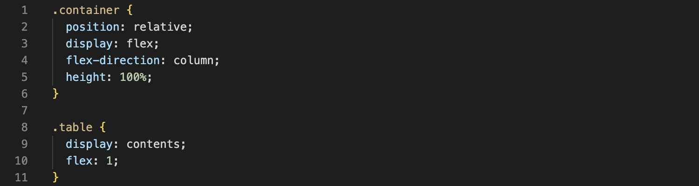
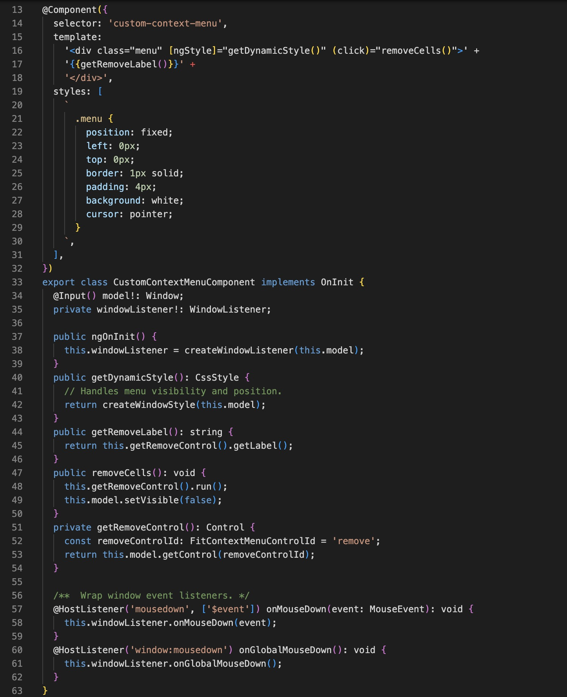
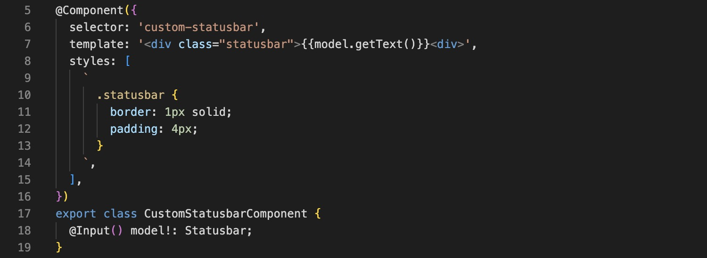

<div class="topic">
  <h1 class="title">{{ title }}</h1>
  <h2 class="subtitle">Preview</h2>
  <div class="fittable">
    <div class="container">
      <!-- <fit-toolbar *ngIf="hasToolbar()" [model]="getToolbar()" /> -->
      <custom-toolbar *ngIf="hasToolbar()" [model]="getToolbar()" />
      <fit-table class="table" [viewModel]="getViewModel()" />
      <!-- <fit-statusbar *ngIf="hasStatusbar()" [model]="getStatusbar()" /> -->
      <custom-statusbar *ngIf="hasStatusbar()" [model]="getStatusbar()" />
      <fit-settingsbar *ngIf="hasSettingsBar()" [model]="getSettingsBar()" />
      <!-- <fit-context-menu *ngIf="hasContextMenu()" [model]="getContextMenu()" /> -->
      <custom-context-menu
        *ngIf="hasContextMenu()"
        [model]="getContextMenu()"
      />
    </div>
  </div>
  <h2 class="subtitle">Source code</h2>
  <h3 class="sub-subtitle">custom-view.component.ts</h3>
  <div class="code-snippet">
    
  </div>
  <h3 class="sub-subtitle">custom-view.component.html</h3>
  <div class="code-snippet">
    
  </div>
  <h3 class="sub-subtitle">custom-view.component.css</h3>
  <div class="code-snippet">
    
  </div>
  <h3 class="sub-subtitle">custom-toolbar.component.ts</h3>
  <div class="code-snippet">
    
  </div>
  <h3 class="sub-subtitle">custom-context-menu.component.ts</h3>
  <div class="code-snippet">
    
  </div>
  <h3 class="sub-subtitle">custom-statusbar.component.ts</h3>
  <div class="code-snippet">
    
  </div>
</div>
